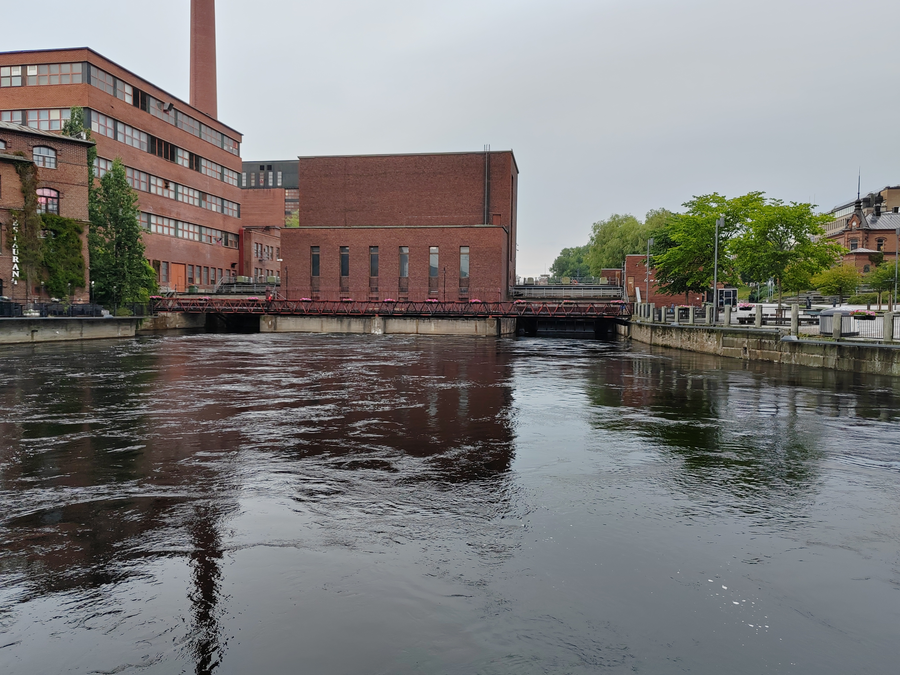

Sea view
A beautiful, calm view across the open sea. The photograph is embedded directly into the card background and softened with a semi-transparent overlay so this text remains readable.
On this page, you will practice integrating images into a web page's overall design.
A beautiful, calm view across the open sea. The photograph is embedded directly into the card background and softened with a semi-transparent overlay so this text remains readable.
A scenic view of Tammerkoski, displayed in classic monochrome using the CSS grayscale filter.

A beautiful view of Hakalahdenkatu. Click the photograph below to open the original full-size image file.